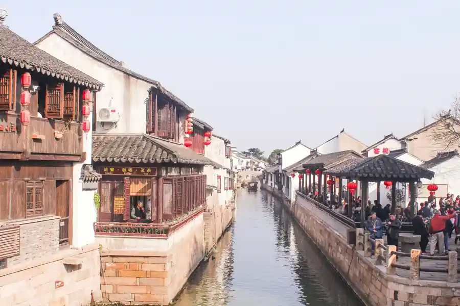

Luzhi in Pictures
Real scenes from Luzhi — landmarks, streets and everyday life.

Luzhi Jiangnan Water Town Transfer
Private car to Luzhi — one of the best-preserved Jiangnan water towns near Suzhou. Licensed professional driver. Fixed price. Explore 5.6km of canals, 41 ancient stone bridges, and the authentic water town life of the Yangtze Delta.
Luzhi at a Glance
Luzhi (甪直, also written as Lucheng or Luzhi) is one of the finest and best-preserved Jiangnan water towns in the Yangtze Delta. Located in Wuzhong District, Suzhou, Jiangsu Province — about 25km from central Suzhou — Luzhi has been an important water transport hub and market town since the Song Dynasty (960–1279 CE). Unlike more commercialized water towns, Luzhi has retained an authentic, living quality — many residents still live in the historic canal-side houses and maintain the daily rhythms of water town life.
Name Origin — "Luzhi" vs "Lucheng"
The town's name has two written forms. The most commonly used — — the characters mean "six straight" and "direct," referring to the six canal branches that radiate from the town center and the straight alignment of its main canal. The alternative name — with the same pronunciation but different characters meaning "land direct" — refers to the town's position at the junction of land and water transport routes. Both forms are used interchangeably today.
Why Luzhi is Different from Other Water Towns
Luzhi is often compared to the more famous Zhouzhuang and Tongli water towns, but it has a distinct character. Where Zhouzhuang has become highly commercialized and tourist-oriented, Luzhi has retained much more of its authentic, living quality. Many of the canal-side houses are still lived in by local families — you will see residents washing clothes at the stone steps (water ports), old men playing chess by the canal, and traditional crafts being practiced in the workshops along the lanes. It is one of the few Jiangnan water towns where you can still experience the real rhythms of water town life.
Geography & Canal System
Luzhi sits at the confluence of multiple canal branches that form part of the ancient Grand Canal (大运河) waterway system. The town's layout follows the canals — houses face the water, with stone steps (water ports, 河埠) for drawing water and loading boats. The canals are spanned by 41 historic stone arch and slab bridges, many dating to the Song, Yuan, and Ming dynasties. The oldest bridge — the Jinguang Bridge (金光桥) — dates to the Song Dynasty.
Cultural Heritage — Writers, Painters & Philosophers
Luzhi has produced an extraordinary number of notable scholars, writers, and painters across Chinese history. The town is particularly proud of Ye Shengtao (叶圣陶) — one of China's greatest modern writers, born in Luzhi. The writer's former residence is one of the town's key sites. The tradition of scholarly achievement in Luzhi is reflected in the elaborate scholar-official houses (民居) that line the canal, many with carved wooden brackets, courtyard gardens, and calligraphy plaques.
Luzhi's Best Photo Spots
Capture the Jiangnan water town from its most evocative angles.
🌉 Yongning Bridge — Dawn Reflections
Best at dawn, before 7 AM
The iconic stone arch of Yongning Bridge (永宁桥) at the town center, reflected in the still canal water on a calm morning, is the most classic Luzhi image. Arrive before 7 AM — before the tour groups arrive — to get this shot in perfect solitude. The low morning light also illuminates the warm stone of the bridge beautifully.
🛶 Canal Boat — Through the Arches
Best from the boat
The view from a traditional wooden rowboat passing under the ancient stone bridges is the most intimate way to photograph Luzhi. The low vantage point from the water, looking up at the arch of the bridge against the sky, creates a beautiful perspective. Have your camera ready as the boat passes under each bridge.
🏘️ Wenzhong Lane — Misty Morning
Best on misty autumn mornings
The narrow lane houses of Wenzhong Lane (文昌弄), photographed on a misty autumn morning when the canal water is cool and mist rises from the surface, create an atmospheric Jiangnan image. The whitewashed walls, grey tiles, and red wooden brackets are most beautiful in soft, diffused light.
🏛️ Ye Shengtao's House — Scholar's Courtyard
Best with available light
The courtyard of Ye Shengtao's former residence, with its scholar's furniture, calligraphy scrolls, and views of the canal through the doorway, is one of the most atmospheric interior spaces in Luzhi. The morning light coming through the lattice windows creates beautiful patterns on the wooden floor. Photography permitted throughout.
🌸 Canal Blossoms — Spring
Best in April
In April, the canal-side wisteria and cherry trees come into bloom, and the purple and pink flowers cascading over the canal create one of Luzhi's most beautiful seasonal scenes. The combination of the blossoms, the stone bridges, and the traditional canal boats makes for an unforgettable Jiangnan spring image. Early April is peak bloom.
🏯 🎑 Canal Lanterns — Evening
Best after sunset
When the red lanterns along the canal are lit after sunset, Luzhi transforms into a different, more romantic water town. The reflections of the lanterns in the dark canal water, the silhouettes of the stone bridges, and the quiet of the evening after the day-trippers have left create a completely different atmosphere from the daytime. Evening boat rides are available after sunset.
Top Luzhi Attractions
From historic sites to local flavours, here is what Luzhi is known for.
Popular Luzhi Routes
Fixed-price private car service to Luzhi and the surrounding Suzhou water towns.
⛰️ Shanghai → Luzhi Water Town
From ¥295($41.55)~70 km · 60–90 min · Economy/Business/MPV
Your driver picks you up at your Shanghai hotel or Shanghai Hongqiao area and drives directly to Luzhi. The most comfortable and reliable way to reach the water town. Pre-book to ensure your driver knows the best parking and entrance arrangements.
🏝️ Suzhou → Luzhi Day Trip
From ¥295($41.55)~25 km · 30–40 min · Economy/Business/MPV
Your driver takes you from your Suzhou hotel to Luzhi for a full day. The driver waits at Luzhi and is available throughout the day. Combine with other nearby water towns (Tongli, Zhouzhuang) or with a visit to the Suzhou classical gardens in the afternoon.
🏝️ Suzhou Train Station → Luzhi
From ¥295($41.55)~30 km · 40–50 min · Economy/Business/MPV
Arrive at Suzhou Railway Station or Suzhou North Station by high-speed train from Shanghai (25 min), Nanjing (60 min), Beijing (4.5h), or Hangzhou (60 min). Your driver meets you at the station exit and drives directly to Luzhi. Much more comfortable than public buses.
🌊 Luzhi + Tongli + Zhouzhuang Loop
From ¥295($41.55)~100 km · Full day · Business vehicle
Your driver takes you to Luzhi in the morning (least crowded), then to Tongli water town for lunch, and finally to Zhouzhuang in the afternoon/evening when the day-trippers have left. The driver waits throughout and handles all logistics. Best done on a weekday.
Transparent Pricing in Luzhi Water Town Transfer &
Published rates, no estimate games. Check the numbers yourself before you book — and the price you see is the price your driver is paid from.
Fixed Price List — 甪直 (Luzhi Water Town Transfer &)
Published rates from our 2026 quote sheet. Renminbi first, USD for reference at 1 USD = ¥7.10. Every price below already includes tolls, parking, driver service and free airport waiting time (up to 60 minutes after your flight lands) — nothing is added on the day.
🛬 Luzhi Airport & Intercity Transfer Rates
One flat fare for airport pickup, drop-off or city-to-city — intercity costs the same as the airport run. 35 km and 60 minutes included; beyond that we charge by the minute and the kilometre at the rates shown.
| Vehicle | Seats | Bags | Fixed fare | USD | Beyond 35 km / 60 min |
|---|---|---|---|---|---|
| 4-seat Economy Sedan | 4 | 2 | ¥295 | ≈ $41.55 | ¥1.44/min · ¥6.52/km |
| 4-seat Comfort Sedan | 4 | 2 | ¥421 | ≈ $59.3 | ¥1.59/min · ¥7.21/km |
| 6-seat Business Van | 6 | 3 | ¥525 | ≈ $73.94 | ¥1.69/min · ¥7.67/km |
| 8-11-seat Business Van | 11 | 4 | ¥827 | ≈ $116.48 | ¥2.2/min · ¥9.97/km |
| 12-18-seat Minibus | 18 | 4 | ¥952 | ≈ $134.08 | ¥2.45/min · ¥11.12/km |
| 19-55-seat Coach Bus | 55 | 5 | ¥1108 | ≈ $156.06 | ¥2.79/min · ¥12.66/km |
🚗 Hourly Private Charter
Book the car and the hours, keep the car for the day. Unused kilometres can be carried into the next tier, so a long day never turns into a penalty. The driver stays with you — you set the stops.
| Vehicle | 2h / 35km | 4h / 50km | 6h / 75km | 8h / 100km | 10h / 125km |
|---|---|---|---|---|---|
| 4-seat Private Car | ¥351 | ¥572 | ¥689 | ¥793 | ¥923 |
| 6-seat Business Van | ¥455 | ¥741 | ¥897 | ¥1027 | ¥1196 |
| 8-11-seat Business Van | ¥655 | ¥1067 | ¥1292 | ¥1479 | ¥1722 |
| 12-18-seat Minibus | ¥786 | ¥1280 | ¥1550 | ¥1775 | ¥2067 |
| 19-55-seat Coach Bus | ¥943 | ¥1537 | ¥1860 | ¥2130 | ¥2480 |
Why travellers book Luzhi Water Town Transfer & with Chinawheely
Six things you get with every booking — in Luzhi Water Town Transfer & and across all 346 cities on the platform.
Licensed travel agency, not a ride-hail app
Chinawheely is a registered travel agency (L-HUB-101603). Your booking is a travel contract with a licensed operator — not a broker handing your number to whoever answers the phone.
One locked price, shown before you pay
The price you see is the price you pay. Tolls, parking, driver service and airport waiting time are already inside it. No surge pricing, no meter, no cash-on-the-day surprise.
Flight tracked, waiting time on us
We watch your flight number in real time. If it lands late or is delayed, your driver shifts with it and the waiting time stays on us — not on your bill.
A licensed driver who knows the city
Every car is driven by a professional local driver who knows the routes, the shortcuts and the parking that actually works near the attractions — with English communication and a name board on arrival.
Free changes up to 48 hours before
Plans move. Reschedule or cancel any booking free of charge up to 48 hours before your scheduled pickup, straight from your confirmation link.
A real human on WhatsApp, 8AM–12AM Beijing time
One message reaches a person who can re-price, re-route or re-plan your trip on the spot. No ticket queue, no chatbot loop.
Book Luzhi Water Town Transfer & at the published price
Pick your vehicle, see the fare line by line, and pay by PayPal or Alipay. Free changes up to 48 hours before pickup — or ask on WhatsApp and we will hold a car for you.
The quote is valid for 48 hours, and you can change or cancel free up to 48 hours before pickup.
Getting to Luzhi: Transfer Options
Everything you need to know about reaching the Jiangnan water town from Shanghai, Suzhou, and beyond.
⛰️ From Shanghai
~70 km · 60–90 min by car
Luzhi is about 70km from central Shanghai — roughly 60–90 minutes by car depending on traffic. Your driver picks you up at your Shanghai hotel. The route passes through the Jiashan/Yangtze Delta area. Luzhi is most easily visited as a day trip from Shanghai or Suzhou.
🏝️ From Suzhou
~25 km · 30–40 min by car
Luzhi is only 25km from central Suzhou — the closest water town to the city. A private car is by far the most comfortable option for this short journey. There is no direct metro or high-speed rail to Luzhi. A private transfer is the best option for Suzhou visitors.
🚄 Nearest Railway Stations
🏝️ Suzhou Railway Station (苏州站)
~30 km · 40–50 min to Luzhi
Suzhou's main railway station, serving high-speed G/D trains from Shanghai (25 min), Nanjing (60 min), Hangzhou (60 min), Beijing (4.5h), and Guangzhou (7h). Pre-book your private car to meet you at the station exit for the drive to Luzhi.
🏝️ Suzhou North Station (苏州北站)
~35 km · 45–55 min to Luzhi
The high-speed station in Suzhou's east district, handling north-south high-speed services. Pre-booking recommended, especially for weekend visits. Your driver meets you at the north exit.
⛰️ Shanghai Hongqiao Station (上海虹桥)
~80 km · 75–90 min to Luzhi
If arriving in Shanghai by air at Hongqiao Airport or by high-speed rail at Hongqiao Station, Luzhi is an easy one-hour drive. Pre-book your private car to meet you directly at the station or airport for a seamless transfer to the water town.
Food & Shopping in Luzhi
🍜 Must-Try Luzhi & Jiangnan Cuisine
Luzhi Fried Salted Pork with Green Beans (甪直酱肉)
The signature Luzhi dish — pork belly slow-cooked in soy sauce, rice wine, and spices until the meat is dark, glossy, and intensely savory. Served cold as a main course or chopped and stir-fried with seasonal vegetables. Found at traditional restaurants along the main canal. The best version is at the old restaurant near Yongning Bridge.
Wonton Soup (馄饨)
The Jiangnan-style wonton — thin wrappers, a small pork or shrimp filling, served in a clear chicken broth with sliced seaweed, dried shrimp, and cilantro — is a beloved Luzhi breakfast. Found at the morning wet market and at small restaurants near the canal. The morning market wonton stall near the main bridge is the best in town.
Suzhou-style Hairy Crabs (大闸蟹)
Seasonal (September–December). The Yangtze Delta's famous hairy crabs (大闸蟹) from nearby Yangcheng Lake are at their best in autumn. The rich orange crab roe and delicate white crab meat are traditionally steamed and served with Zhenjiang vinegar and ginger strips. Luzhi's proximity to Yangcheng Lake makes it an excellent place to enjoy this seasonal delicacy.
Suzhou Dim Sum & Pastries (苏式点心)
Luzhi's location in the Suzhou culinary tradition means excellent access to Suzhou-style dim sum and pastries — from flaky pork pastry (鲜肉月饼) to sweet lotus seed paste buns (莲蓉包). The traditional teahouse near Bao'en Temple serves an excellent selection. Try the locally-made Luzhi silk candy (丝绸糖) as a souvenir.
Canal-side Tea at the Old Teahouse
The old teahouse (古茶馆) near Bao'en Temple has been serving tea in the same location for over a century. Sitting at a canal-side table, drinking Longjing tea (龙井) and watching the canal traffic — cargo boats, rowing boats, and residents drawing water — is one of the most authentic experiences in Luzhi. The teahouse also serves traditional Suzhou-style dim sum.
🛍️ Shopping Destinations
Luzhi Canal-side Shops
The canal-side shops in Luzhi sell a mix of traditional crafts and tourist souvenirs — silk scarves, hand-embroidered shoes (绣花鞋), traditional cloth, calligraphy scrolls, and local food products. Unlike the heavily commercialized water towns, Luzhi's shops still sell many genuine local products alongside the tourist items.
Wenzhong Lane Handicraft Shops
The narrow Wenzhong Lane has several small shops selling traditional Luzhi handicrafts — hand-embroidered cloth shoes, silk weaving demonstrations, and traditional paper-cutting. These are genuine local crafts, not the mass-produced souvenirs found in other water towns.
🎁 What to Buy in Luzhi
Luzhi Hand-Embroidered Cloth Shoes (绣花鞋)
Traditional hand-embroidered cloth shoes are one of Luzhi's signature crafts — tiny, beautifully embroidered shoes made with fine silk thread on satin ground. The designs incorporate traditional Jiangnan motifs — flowers, birds, and auspicious symbols. These make exquisite souvenirs or gifts. Buy at the workshops in Wenzhong Lane for the best quality.
Silk & Brocade from Suzhou
Suzhou is one of China's most famous silk-producing cities, and Luzhi is close enough to the silk factories that good silk products are readily available. Suzhou silk scarves, brocade panels, and silk fabric make excellent souvenirs. Buy at specialty silk stores rather than the tourist stalls for better quality and more competitive prices.
Luzhi Silk Candy (丝绸糖)
Luzhi's traditional silk candy — a fine, cotton-candy-like confection pulled into delicate threads — is sold at small food stalls throughout the town. Lightweight, travel-friendly, and genuinely local. Also look for the local sesame seed cookies (芝麻糖) and preserved vegetables from the morning market.
Intangible Cultural Heritage & Living Crafts of Luzhi
Traditional crafts and cultural traditions of the Jiangnan water town.
👟 Luzhi Hand-Embroidered Cloth Shoes (绣花鞋)
Hand-embroidered cloth shoes are one of Luzhi's signature traditional crafts. The shoes — small, often for bound feet historically, though modern sizes are now standard — are embroidered with silk thread in traditional Jiangnan motifs. The craft involves pattern making, fabric cutting, embroidery, and assembly — each pair taking many hours to complete. The workshops along Wenzhong Lane still practice this craft.
Where to find: Wenzhong Lane workshops, Luzhi Handicraft Museum.
🧶 Suzhou Silk Weaving
Suzhou is one of China's great silk-weaving centers, and Luzhi's proximity to Suzhou means the silk weaving tradition is alive in the town. The craft involves raising silkworms, unreeling cocoons, spinning the silk thread, and weaving it on traditional jacquard looms into brocade patterns of extraordinary complexity. The Luzhi Handicraft Museum has working looms and demonstrations.
Where to see: Luzhi Handicraft Museum, silk workshops near the main canal.
🎋 Suzhou Pingtan — Storytelling & Music
Pingtan (评弹) — a traditional Suzhou-area performance art combining storytelling, spoken word, and music played on the pipa (lute) and sanxian (three-stringed instrument) — is an important cultural tradition in the Suzhou-Jiangnan region. Performances are occasionally staged at the old teahouse near Bao'en Temple in Luzhi. The Suzhou dialect used in pingtan gives it a distinctive local character.
Where to experience: Old teahouse near Bao'en Temple, cultural events in Suzhou.
🎭 Suzhou Opera (昆曲)
Kunqu (昆曲), also known as Kun Opera, is China's oldest and most refined operatic tradition, originating in the Kunshan area near Suzhou — just 40km from Luzhi. The elegant, slow-moving performances with elaborate costumes and makeup, singing in classical Chinese, are recognized by UNESCO as a masterpiece of intangible heritage. Luzhi's cultural center occasionally stages Kunqu performances.
Where to experience: Suzhou's Pingtan Museum, Liangmen Theatre in Suzhou.
✂️ Suzhou-style Paper-Cutting (剪纸)
Paper-cutting is a beloved folk art in the Suzhou-Jiangnan region, with designs that reflect the area's garden and canal culture — lotus flowers, fish, traditional lattice patterns, and scholar's motifs. Luzhi's paper-cutting tradition features fine, intricate cuts made with exceptional precision — reflecting the Jiangnan aesthetic of delicacy and detail. Found at the Luzhi Handicraft Museum and local markets.
Where to find: Luzhi Handicraft Museum, Wenzhong Lane craft shops.
🏠 Jiangnan Scholar's House Architecture
The traditional Jiangnan lane house (民居) — with its whitewashed walls, grey tiled roofs, carved wooden brackets, courtyard gardens, and water-facing orientation — represents one of China's finest architectural traditions. The craft of building and maintaining these houses — from the timber framing and lattice windows to the carved brick gatehouses — is a living tradition in Luzhi, where many houses are still maintained in traditional style.
Where to see: Wenzhong Lane, Mingqing Lane, Ye Shengtao's former residence.
Luzhi Local Secrets
Insider tips to help you experience Luzhi like a local.
Arrive Before 7 AM
Luzhi is popular with tour groups, and by 9 AM the main canal can be crowded with visitors. The town transforms in the early morning — before 7 AM — when mist rises from the canal, local residents draw water and wash clothes at the stone steps, and the light is soft and golden. This is when you can photograph the real, living water town. Stay until evening when the day-trippers leave and the evening lantern light is magical.
Take the Boat to the Back Channels
The standard canal boat tour sticks to the main canal. Negotiate with your boatman to take the back channels (支流) — narrower, quieter waterways where the canal houses back onto the water and you can see domestic life unfiltered: old women hanging laundry, cats on doorsteps, vegetable gardens on the canal banks. This is the real Luzhi that most visitors miss.
Eat at the Morning Wet Market
The best food in Luzhi is at the morning wet market (早市) near the main canal bridge. The wonton stall, the fried dough twist vendor, and the sesame cake baker are all local institutions. Join the locals at the small tables and eat standing — the crab roe noodle (螃蟹粉面) and the wontons are extraordinary. The market winds down by 9–10 AM.
Attend a Pingtan Performance
Ask your driver to check if there is a pingtan (评弹) performance scheduled at the old teahouse near Bao'en Temple during your visit. This traditional Suzhou storytelling and music performance — one person narrating and singing while accompanying themselves on the pipa — is one of the most intimate and authentic cultural experiences in Jiangnan. The teahouse atmosphere is an essential part of the experience.
Visit in Late April for Wisteria
If you can time your visit for late April, you will find the canal-side wisteria in full bloom — the cascading purple flowers over the canal water, against the stone bridges and traditional houses, make for one of the most beautiful scenes in the Jiangnan water towns. Early April is also the best time to see Luzhi's famous canalside cherry and pear blossoms.
Stay Overnight in a Canal-side Inn
Luzhi is at its most magical in the early morning and evening — both times when the day-trippers are absent. Staying overnight in one of Luzhi's boutique canal-side inns (民宿) means you can experience the water town at these quiet, beautiful moments. The same inn also gives you the chance to explore the lantern-lit evening scene and eat dinner at the canal-side restaurants without the lunch crowds.
Day Trips from Luzhi
Real destinations around Luzhi, reached comfortably with a private car and a licensed professional driver.
Useful Chinese Phrases for Luzhi
A few words for the Jiangnan water town.
👋 Nǐ hǎo
你好
Hello — The universal greeting.
🙏 Xièxiè
谢谢
Thank you — Locals appreciate the effort.
🛶 Wǒ yào chéng chuán
我要乘船
I want to take a boat — Tell your driver you'd like a canal boat ride.
🏡 Wǒ yào kàn gùjū
我要看古桥
I want to see the ancient bridges — Tell your driver you'd like to explore the bridges.
🍜 Zhège hǎochī
这个好吃
This is delicious — Say it at the canal-side restaurant!
💰 Duōshao qián?
多少钱？
How much is this? — Essential for the canal-side shops.
Book Your Luzhi Water Town Transfer
Fixed price, licensed professional driver. From Shanghai, Suzhou, or any railway station to Luzhi's ancient canals and stone bridges.
Get Instant QuoteQuestions? WhatsApp +86-155-2777-1775
Travel Essentials for Your Luzhi Trip
Make your Luzhi water town journey smoother with these services.
Mobile Pocket Wi-Fi
Stay connected across the Yangtze Delta with a pocket Wi-Fi device. Pre-book online and pick up at Shanghai airport or Suzhou railway station for use in Luzhi.
Book Wi-Fi at ChinaWiFiGoEnglish-Speaking Guide
Explore Luzhi's canals, bridges, and historic houses with a professional English-speaking guide who knows the Jiangnan water town culture.
Book Guide at VIPChinaGuideMedical Services
Add a health checkup, dental cleaning, or traditional Chinese medicine session to your Jiangnan trip. Suzhou's medical services are excellent and affordable.
Book Medical at MediEscortChinaMore China destinations
Compare routes, published prices and local driver tips across the cities we cover.
Other cities in Jiangsu
Popular destinations